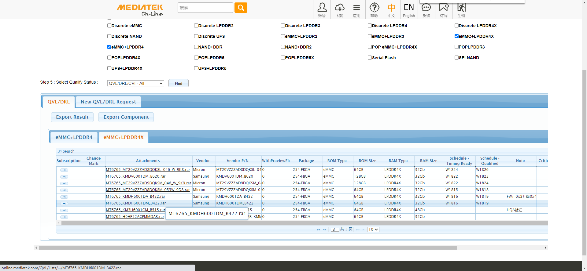

MTK平台emcp测试详解
特别提醒
参考文档
一.ETT实验过程
1.ett测试条件
2.ett测试过程
Step1.测试型号
Step2.bin文件需要从mtk online上下载
Step3.接入debug串口到电脑
Step4.格式化单板
Step5.连接USB完成ETT bin下载
Step6.转到超级终端调电压
Step7.电压粗调(HV, NV, LV)
Step9.电压测量
Step10.ETT测试PASS判断标准
二.StressTest电压测量
三.Stress test测试步骤(需进行高低常温测试、不能拔出USB)
Step1： 搭建环境
Step2.根据测试场景选择对应的load (HTLV/LTHV/NTNV)
Step3.设置device id
Step4. Install_Nenamark2.bat
Step5. Push.bat
Step6. OPP table配置
Step7. run.sh && vcorefs_cervino.sh
Step8. start_DVFS_N2_Mem_test.bat
Step9. 注意事项
Step10. Nenamark2 + DVFS for Fast-K测试步骤
四.Suspend/Resume测试步骤(需要拔出USB、不需要高低温测试)
五.REBOOT测试步骤(不需要高低温测试、不能拔出USB)
1.DDR reserve mode Reboot测试步骤
2.Full-K Reboot测试步骤
3.Fast-k Reboot测试步骤
六.判断测试pass的方法
使用ETT工具，自动同步memory设备，调试一组最优化的memory时序设定用于量产，同时检测memory接口的稳定性,避免因时序不稳定导致的系列问题； 因此，在导入新layout或者memory chip的时候都请跑一遍ETT和压力测试。
特别提醒
目前所有测试项都可以使用userdebug软件，请注意
DDR reserve mode Reboot测试和Fast-k Reboot测试两个测试项需要抓取uart log。需要高温下做压力的测试项， PCB的温度很快上升到100度，就会触发Thermal关机，请务必用假电池，并把NTC电阻换成10K。
请注意有的测试项需要接usb，有的需要测高低温。
所有测试项都不需要打开MTK DebugLoggerUI记录log。
请确保低温测试温度-20度，常温25度，高温65度。
参考文档
一.ETT实验过程
1.ett测试条件
未烧录过efuse（镜像验签功能）的单板。
下载过ett程序的板子请务必先Format whole flash。
工具:支持MT6765_62平台的Flash tool(W1748以后版本)。
ETT BIN说明:https://online.mediatek.com/qvl/_layouts/15/mol/qvl/ext/QVLHomeExternal.aspx 下载对应平台、对应memory的ETT bin。
必须用电源给VBAT供电，高低温环境下测试不能使用电池。
手机上的NTC需要下拉10K电阻到GND， 模拟电池本身的NTC。
2.ett测试过程
Step1.测试型号
[32+3：KMDX60018M_B425]
[64+4：KMDH6001DA-B422]
Step2.bin文件需要从mtk online上下载

目前M8项目ETT bin请参考
DDR压力测试\ETT测试bin文件路径下的文件。
Step3.接入debug串口到电脑
串口工具波特率设置为921600:
Step4.格式化单板
打开Flash tool，在download 页面加载对应平台的scatter-loading file，下载过ett程序的板子请务必先Format whole flash：
加载对应平台的scatter-loading file：
Format whole flash:
Step5.连接USB完成ETT bin下载
组合键Ctrl+Alt+A调出flash tool的brom Adapter->选择ETT bin->设置start address(0x204000)->勾上Jump->点击download。
Step6.转到超级终端调电压
Step7.电压粗调(HV, NV, LV)
此时测量的电压值不准确，需要在第九步用万用表测试电压。
Step8.开始ETT 测试
在串口软件中主菜单选G开始ETT 测试，如果过程中卡住，请重新多测试几遍，看最终是否能够跑通。
Step9.电压测量
ETT 测试时间不长，完成之后 ETT log就不会再有log记录，此时不要下电请用万用表测试对应环境温度的电压， 确认Vcore,Vmem(VDD2), Vddq电压在20mV范围以内即可。
Step10.ETT测试PASS判断标准
根据MTK文档描述，判断成功的两个依据：
1.Dram Data rate = 3200表示memery能跑到3200MHZ。
2.全部都是PASS。
具体请参考其中文档MT6765_62 ETT & stress test reference for LP4X V1.6.pdf，提出了以下几个测试点：
ETT test step by step (ETT测试主要是调试一组最优化的memory时序设定用于量产，需要空板(emmc未烧录)+焊接串口) 这块主要是软件人员配合硬件在新DDR上做验证。
MTK Eye-Scan Function (判断ETT测试结果)
例子：EET测试完，并提示成功，打印如下：
[HQA] information for measurement, Dram Data rate = 3200
[Read Voltage]
[HQALOG] 3200 Vcore_HQA = 800000
[HQALOG] 3200 Vdram_HQA = 1125000
[HQALOG] 3200 Vddq_HQA = 600000
[Cmd Bus Training window]
VrefCA Range : 1
VrefCA
[HQALOG] 3200 VrefCA Channel0 Rank0 41
[HQALOG] 3200 VrefCA Channel0 Rank1 41
[HQALOG] 3200 VrefCA Channel1 Rank0 46
[HQALOG] 3200 VrefCA Channel1 Rank1 42
CA_Window
[HQALOG] 3200 CA_Window Channel0 Rank0 57 (bit 3)
[HQALOG] 3200 CA_Window Channel0 Rank1 56 (bit 3)
[HQALOG] 3200 CA_Window Channel1 Rank0 57 (bit 3)
[HQALOG] 3200 CA_Window Channel1 Rank1 56 (bit 4)
CA Min Window(%)
[HQALOG] 3200 CA_Window(%) Channel0 Rank0 90% (PASS)
[HQALOG] 3200 CA_Window(%) Channel0 Rank1 88% (PASS)
[HQALOG] 3200 CA_Window(%) Channel1 Rank0 90% (PASS)
[HQALOG] 3200 CA_Window(%) Channel1 Rank1 88% (PASS)
[RX minimum per bit window]
Delaycell measurement(/100ps)
VrefRX
[HQALOG] 3200 VrefRX Channel0 Rank0 12
[HQALOG] 3200 VrefRX Channel0 Rank1 11
[HQALOG] 3200 VrefRX Channel1 Rank0 12
[HQALOG] 3200 VrefRX Channel1 Rank1 12
RX_Window
[HQALOG] 3200 RX_Window Channel0 Rank0 34 (bit 7)
[HQALOG] 3200 RX_Window Channel0 Rank1 35 (bit 2)
[HQALOG] 3200 RX_Window Channel1 Rank0 36 (bit 12)
[HQALOG] 3200 RX_Window Channel1 Rank1 36 (bit 3)
RX Window(%)
[HQALOG] 3200 RX_Window(%) Channel0 Rank0 22134/100ps (71%) (PASS)
[HQALOG] 3200 RX_Window(%) Channel0 Rank1 22785/100ps (73%) (PASS)
[HQALOG] 3200 RX_Window(%) Channel1 Rank0 23436/100ps (75%) (PASS)
[HQALOG] 3200 RX_Window(%) Channel1 Rank1 23436/100ps (75%) (PASS)
[TX minimum per bit window]
VrefDQ Range : 0
VrefDQ
[HQALOG] 3200 VrefDQ Channel0 Rank0 20
[HQALOG] 3200 VrefDQ Channel0 Rank1 20
[HQALOG] 3200 VrefDQ Channel1 Rank0 26
[HQALOG] 3200 VrefDQ Channel1 Rank1 22
TX_Window
[HQALOG] 3200 TX_Window Channel0 Rank0 20 (bit 4)
[HQALOG] 3200 TX_Window Channel0 Rank1 23 (bit 5)
[HQALOG] 3200 TX_Window Channel1 Rank0 21 (bit 2)
[HQALOG] 3200 TX_Window Channel1 Rank1 23 (bit 2)
TX Min Window(%)
[HQALOG] 3200 TX_Window(%) Channel0 Rank0 63% (PASS)
[HQALOG] 3200 TX_Window(%) Channel0 Rank1 72% (PASS)
[HQALOG] 3200 TX_Window(%) Channel1 Rank0 66% (PASS)
[HQALOG] 3200 TX_Window(%) Channel1 Rank1 72% (PASS)
二.StressTest电压测量
为了验证DRAM的稳定性，接下来便做Stress test，stress test前测量Vcore电压需要在开机后测量，并参考以下说明，设定固定的Vcore档位后再用示波器测量。
特别提醒：正常流程，ETT高低常温度必须一次性全部pass了，才做StressTest电压测量，不然烧录完userdebug软件，机器开机会走验签流程，无法进行ETT测试。
1.测量电压时， 首先单板下载userdebug软件，如测量高低温下的电压，然后请注意分别download对应HV/LV的preloader bin，路径DDR压力测试\preloader镜像，开机后测试。
2.查看当前vcore的DVFS OPP table，如下图所示显示NV电压，有的cat出来OPP13，OPP14是0.675V或0.65V，以cat出来的值为准，测量电压只要与cat值一致即可。
130|PAYTABLETM8:/ # cat sys/devices/platform/10012000.dvfsrc/10012000.dvfsrc:dvfsrc-up/dvfsrc_opp_table
FW_TYPE : 1
NUM_VCORE_OPP : 4
NUM_DDR_OPP : 3
NUM_DVFSRC_OPP : 16
[OPP0 ]: 800000 uv 3200000 khz
[OPP1 ]: 800000 uv 3200000 khz
[OPP2 ]: 800000 uv 3200000 khz
[OPP3 ]: 800000 uv 2400000 khz
[OPP4 ]: 800000 uv 3200000 khz
[OPP5 ]: 800000 uv 2400000 khz
[OPP6 ]: 800000 uv 3200000 khz
[OPP7 ]: 800000 uv 2400000 khz
[OPP8 ]: 700000 uv 2400000 khz
[OPP9 ]: 700000 uv 2400000 khz
[OPP10]: 700000 uv 1534000 khz
[OPP11]: 700000 uv 2400000 khz
[OPP12]: 700000 uv 1534000 khz
[OPP13]: 650000 uv 1534000 khz
[OPP14]: 650000 uv 1534000 khz
[OPP15]: 650000 uv 1534000 khz
3.执行adb命令分别固定5档位，每执行一条命令固定一个档位，测量一次Vcore电压， 共执行5次命令测量5次，看和设定的电压差异多大，默认测量到的是Opp0的Vcore电压。后续测量到的电压要覆盖到三种频率（3200,2400,1534）， 三种电压（0.8， 0.7,0.65）即可，例如：频率2400电压0.8v可以测试OPP7也可以测试OPP8。
1.写入OPP10档位(1534MHZ)：
echo 10 > sys/devices/platform/10012000.dvfsrc/10012000.dvfsrc:dvfsrc-debug/dvfsrc_force_vcore_dvfs_opp
2.查看是否档位设置成功。
cat sys/devices/platform/10012000.dvfsrc/10012000.dvfsrc:dvfsrc-debug/dvfsrc_dump
Vcore : 700000 uv
DDR : 1534000 khz
GPS_HOPPING: 0
PTPOD_0 : 00100090
PTPOD_10 : 000f9855
INFO2 : 00000000
3.实测vcore电压0.7v
2400MHZ：
echo 7 > sys/devices/platform/10012000.dvfsrc/10012000.dvfsrc:dvfsrc-debug/dvfsrc_force_vcore_dvfs_opp
实测vcore电压0.8v
3200MHZ：
echo 13 > sys/devices/platform/10012000.dvfsrc/10012000.dvfsrc:dvfsrc-debug/dvfsrc_force_vcore_dvfs_opp
实测vcore电压0.65v
HV和LV测量电压方法一样，测量时需要覆盖三种频率，下载不同的preloader镜像。
三.Stress test测试步骤(需进行高低常温测试、不能拔出USB)
该测试项主要两个测试点：
机器在不同温度下NenaMark2硬件图形处理能力压力测试。
机器在不同温度下DVFS功能memtest测试，memtest用来考察内存稳定性，尤其适合对对内存不同频率、时序进行切换之后的检验。
Step1搭建环境
Download and install JAVA：
http://www.java.comInstall Android SDK to have ADB.http://developer.android.com/sdk/index.htmlRemember to add ADB in your PATH.设置adb环境变量：EX: C:\ path = %path%; YOU_ADB_PATH获取ADB之后，在ADB安装位置的tool文件夹下产生一个monkeyrunner.bat的文件，请把该文件的路径添加到计算机的PATH， EX： ADB装在D:\Program Files， monkeyrunner.bat位于D:\Program Files\Android\android-sdk\tools，把D:\Program Files\Android\android-sdk\tools添加到PC系统环境变量的PATH；
Install a python environment to be able to run python programs.
For example, download Python 2.7.3 Windows Installer (Windows binary -- does not include source) from http://www.python.org/getit/
DVFS_Nenamark_Memtester_Script，suspend_and_DVFS script在绝对路径当中不能包含空格和中文.
根据上面的环境变量设置，请参考以下：
Step2.根据测试场景选择对应的load (HTLV/LTHV/NTNV)
高温测试请下载
DDR压力测试\preloader镜像\HV\preloader_k62v1_64_pax.bin镜像，低温则对应LV目录，常温对应NV目录。下载后第一次开机进行如下设置:设置>显示>休眠>30分钟，
设置>Developer options>stay awake 设置为不休眠
手机设置为飞行模式，关闭MTK mobile log
如果在65度的高温下做压力测试， PCB的温度很快上升到100度，就会触发Thermal关机，请务必用假电池，并把NTC电阻换成10K。
注意: Nenamark的测试有可能上传手机资讯, 测试时请不要连接网络,如有 疑虑, 请不要进行此项测试， 脚本会关闭modem和wifi。
Step3.设置device id
DVFS_Nenamark_memtest_script_LPDDR4文件夹中编辑start_DVFS_N2_Mem_test.bat脚本。 把set deviceid=-s 0x?? 设置成所测试手机的device id,如下图所示，然后保存，注意deviceid即为设备SN号，可用adb devices或者在设置菜单中查询Serial number。

Step4. Install_Nenamark2.bat

安装完毕会自动结束，可以在手机里面找到一个NenaMark2的图标, 双击会出现 choose what to allow NenaMark2 to access 的讯息, 点击 continue给权限。然后双击Nenamark2的图标，点击run需要先跑一次3D动画。
Step5. Push.bat
编辑Push.bat脚本，把set deviceid=-s 0x?? 设置成所测试手机的deviceid，双击运行Push.bat(出现下图并退出)。
这里需要配置n2_run文件中的run键 x/y坐标，根据文档display the x and y point.pdf进行配置，修改点如下：

Step6. OPP table配置
目前不需要双击
set_opp_table_HV.bat或者set_opp_table_LV.bat进行配置，直接是在软件里面写死的，做HV/LV测试时只需下载相应的preloader镜像即可。
Step7. run.sh && vcorefs_cervino.sh
执行以下指令：
C:\Users\wugangnan>adb shell
PAYTABLETM8:/ # sh /data/run.sh &
PAYTABLETM8:/ # sh /data/vcorefs_cervino.sh &
Step8. start_DVFS_N2_Mem_test.bat
DVFS_Nenamark_memtest_script_LPDDR4文件夹中双击start_DVFS_N2_Mem_test.bat脚本，会弹出n个框图,同时手机屏幕上3D动画在自动跑动,如果3D动画无法自动run请查看文档display the x and y point.pdf进行设置，这个脚本是测试DDR DVFS功能压力测试。

Step9. 注意事项
此时千万不要拔掉USB，需要跑8小时Stress test
请参看‘判断测试pass的方法’对测试结果进行分析
重复上述步骤将>3部手机的HTLV\LTHV\NTNV所有条件下的Stress test完成。
高温环境测试换用低压preloader bin, 低温环境测试换用高压preloader bin, 常温环境用 常温preloader bin.
每次变化环境都要重新download.
Step10. Nenamark2 + DVFS for Fast-K测试步骤
根据文档描述，就是烧录高温/低温的preloader进行相同的测试。
四.Suspend/Resume测试步骤(需要拔出USB、不需要高低温测试)
该测试项主要针对机器休眠唤醒功能进行压力测试。
Preloader bin使用默认常温的即可。
屏幕不要设置为always on， 手机设置为飞行模式，关闭MTK mobile log。
Step1. 打开suspend_test_v0.4文件夹，手机开debug功能。
Step2.连接手机，双击suspend_loop_push.bat脚本，运行完毕后按任意键结束。
Step3.使用paxtool.bat工具unlock功能将机器解锁。
执行
adb remount。Step4. 调出一个cmd命令框，输入如下命令。
adb shellcd /datanohup /data/suspend_loop.sh &
Step4.拔掉usb,拔掉usb,拔掉usb, 重要的事情说三次。
可接power monitor，也可以接usb adapter，不要直接用电脑供电给手机,测试时间12个小时。
五.REBOOT测试步骤(不需要高低温测试、不能拔出USB)
该测试项主要针对机器DDR在
Reserve mode、Full-K mode、Fast-k mode三种模式下重启功能稳定性测试，且全部都只要在常温下测试就行了，以下是三种DDR工作模式解释：
Reserve mode： DDR_RESERVE_MODE代表重新开机时保留DDR上次的参数信息；重开机时preloader不做ddr的校准，不会清除DDR上的数据。对于user版本，请关闭此宏，这样在手机发生故障后可以通过下一次开机重新做DDR的初始化来让手机有机会恢复正常的状态，这样可以降低客退机的概率。Full-K/Fast-k mode：K代表calibration，目前MTK的架构为第一次开机preloader做完整的full K.只要做完一次full K，从这次以后的开机均走fask K流程。能节约2~3s左右。目的是减少不必要的校准项目，加快开机速度。->依赖于flash中的特殊分区储存参数。
注意，该项测试需要将电脑设置为永不休眠模式，不然Windows会休眠，中断测试。
1.DDR reserve mode Reboot测试步骤
DDR Reserve mode test：
Step1. Preloader bin使用默认的即可，屏幕不要设置为always on，手机设置为飞行模式，关闭MTK mobile log。
Step2.打开reboot_script文件夹，编辑reboot_ddr_reserve_mode.bat把device id改成测试机器 id后保存，双击该脚本出现下图的框图，和其他reboot比较区别在于有 ”reboot with ddr reserve mode”字样 Note:Opp table 每16次循环。
Step3.需要抓UART log进行分析， 需要抓UART log进行分析， 需要抓UART log进行分析,重要的事情说三遍，测试时间12小时。
Step4.请参看‘判断测试pass的方法1和3’ 对测试结果进行分析。
Step5.请打开UART log，对UART log进行关键字搜索,如果log太大请用File-Splitter （网上下载） 把log分割成小份进行分析。
测试Fail的关键字搜索“[RGU] WDT DDR reserve mode FAIL!”。
测试PASS的关键字搜索
DDR RESERVED会出现如下log表示测试pass。
[RGU] WDT DDR reserve mode success! 1387F1
[DDR Reserve] DCS/DVFSRC success! (dcs_en=0, dvfsrc_en=1)
[RGU] WDT DDR reserve mode success! 1387F1
[RGU] DDR RESERVE Success 1
[DDR Reserve] release dram from self-refresh PASS!
Step6. 重复上述步骤将>3部手机在常温条件下reboot完成。
2.Full-K Reboot测试步骤
Step1. 首先使用flashtool工具烧录
DDR压力测试\MT6762平台DDR测试工具\reboot_script\reboot_full_k\preloader_k62v1_64_pax.bin。Step2. 屏幕不要设置为always on，手机设置为飞行模式，关闭MTK mobile log。
Step3. 编辑 reboot_full_k.bat把device id改成测试机器id后保存，双击该脚本。
Note1: Full k 每5次更新。
Note2：脚本若无device id，则不需修改。
Step4. opp table显示当前频率档位。
测试时长：
测试时间12个小时。
Step5.请参看
判断测试pass的方法1和3对测试结果进行分析。Step6. 重复上述步骤将>3部手机在常温条件下reboot完成。
3.Fast-k Reboot测试步骤
此测试项目只对LPDDR4， LPDDR3不需要做这个项目， Preloader bin使用
LV bin（低温preloader镜像）在常温下测试。Fast-k Stress test目的：下载软件后第一次开机的校准数据需要保存下来，为后续测试所用。
Step1.打开reboot_script文件夹，编辑reboot_fast_K.bat把device id改成自己的。
Step2. 双击reboot_fast_K.bat进行测试，测试需要12小时。
Step3.请参看
判断测试pass的方法对测试结果进行分析。Step4.请打开UART log，对UART log进行关键字搜索， 测试Fail的关键字搜索
Save calibration result to emmc，测试PASS的关键字搜索Bypass saving calibration result to emmc。Step5. 重复上述步骤将>3部手机在NT条件下reboot完成。
Note：若上述Fail和PASS关键字均没有搜索到, 请先告知开发自行检查code,看是否有修改掉对应log。
六.判断测试pass的方法
连续测试后仍能正常运行：测试N小时后还在连续跑测试。
如果有跑memtester的项目：连续测试后memtester还是在跑，如果memtester停止下来就是fail。
memtester的窗口停掉了会出现Error detected，如下图所示：

请运行collect_memtest_log.bat，会出现一个log文件夹把memtester fail log直接抓出来，打包上传给MTK分析即可。
3.在下面两个路径下检查是否有这4个字样： KE,HWT， HW_reboot, MEMTEST,如果下面两个路径中有任何一个字样表示fail,没有那3个字样表示pass：
/data/vendor/aee_exp
/data/aee_exp
上述3个条件任一不满足即可判定为 fail, 这时请将log发送给开发分析。